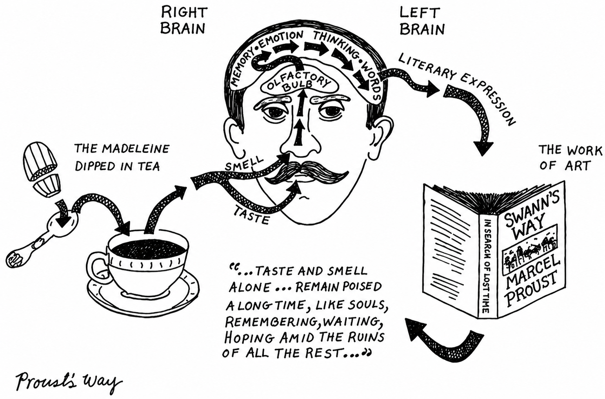
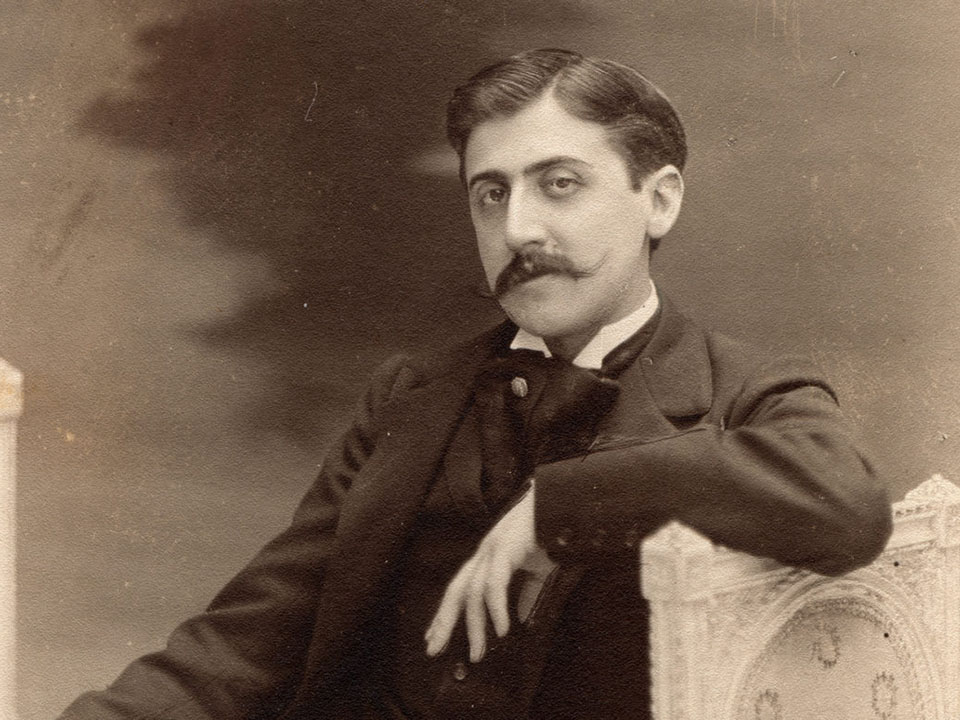

Contents
Character
Name
Description
Reading Circle
Swann's Way
The Madeleine Episode

Marcel Proust
April 28, 2026
Author
Marcel Proust
1871 – 1922

French novelist, critic, and essayist
À la recherche du temps perdu
(In Search of Lost Time)
Context
The Madeleine Moment
From the "Combray" section of Swann's Way (1913)
The famous opening episode that inspired the entire seven-volume novel
A small cake. A cup of tea. And the floodgates of memory open.
Reading Focus
20-Minute Focus
Circle words describing physical sensation of tea and cake
Words to look for: quivered, palate, delicious pleasure, invaded, isolated, precious essence, mediocre, contingent, mortal
Note the transition from "mechanically" eating to active "search"
Look for: The shift from "mechanically" (passive eating) to "the truth I am seeking is not in the drink, but in me" and "It is up to my mind to find the truth" (active seeking)
Characters
Who Appears?
Click any character to learn more
Part I
The Sensation
Winter. A cold day. A cup of tea.
"I quivered, attentive to the extraordinary thing that was happening in me. A delicious pleasure had invaded me, isolated me, without my having any notion as to its cause."
Part II
The Search for Truth
The drink has awakened the truth, but cannot reveal it.
"Seek? Not only that: create. It is face to face with something that does not yet exist and that only it can accomplish, then bring into its light."
Part III
The Resurfacing
The struggle to bring the memory to the surface.
"I feel something quiver in me, shift, try to rise, something that seems to have been unanchored at a great depth... I hear the murmur of the distances traversed."
Part IV
The Revelation
And suddenly—the memory appears.
"That taste was the taste of the little piece of madeleine which on Sunday mornings at Combray... my Aunt Léonie would give me after dipping it in her infusion of tea or lime-blossom."
The Revelation
Like the Japanese Game
"As in that game... little pieces of paper until then indistinct, which, the moment they are immersed in it, stretch and shape themselves, colour and differentiate, become flowers, houses, human figures..."
All of Combray emerges from the cup of tea.
Core Theme
Involuntary Memory
Sensory Triggers
Involuntary Memory
Triggered by sensory cues like taste and smell, emerging without conscious effort.
Unlike voluntary memory (conscious recall), involuntary memory surfaces unbidden—the taste of a cake, the smell of a room, the sound of a voice. Proust believed these moments reveal deeper truths about our past. When we experience something by chance, without looking for it, the memory arrives whole and vivid, carrying the full emotional weight of the original moment. This is the essence of the madeleine experience: a sensation that unlocks an entire lost world.
Neuroscience
The Proust Effect
Sensory memories connect directly to emotional centers, making them vivid and intense.
Modern neuroscience confirms Proust's intuition: smell and taste pathways connect to the limbic system (emotional brain) without passing through cortical filtering, making these memories uniquely powerful and emotionally charged. The olfactory bulb has direct connections to the amygdala and hippocampus, which handle emotion and memory formation. This explains why a scent can instantly transport us back decades, triggering not just a memory but the full sensory and emotional experience of a moment we thought was forgotten.
Emotional Truth
Memory Quality
Brings "emotional truth" while voluntary memory is "dry and partial."
Proust contrasts "mémoire volontaire" (conscious effort to recall) with the spontaneous "mémoire involontaire." Only the latter captures the full sensory and emotional reality of the past moment—alive and whole. When we try to deliberately remember, we analyze and reconstruct, losing the essence. But when memory arrives unbidden, it comes complete with all its colors, scents, and feelings. Proust suggests that true understanding of our lives comes not from intellectual effort but from these moments of grace when the past returns to us in its full richness.
Discussion
Question 1
Think: smell, taste, sound, texture...
Click an icon above
Discussion
Question 2
Consider: The mind as "seeker" and "obscure country"
Discussion
Question 3
Is it about recovery? Acceptance? Creation?
Closing
"The real voyage of discovery consists not in seeking new landscapes, but in having new eyes."
Thank You
Questions?
Appendix: The Proust Questionnaire (in your handout) — reflect on yourself through Proust's timeless questions.